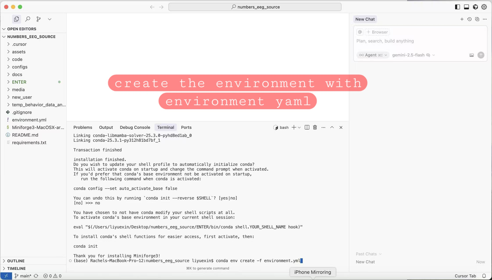
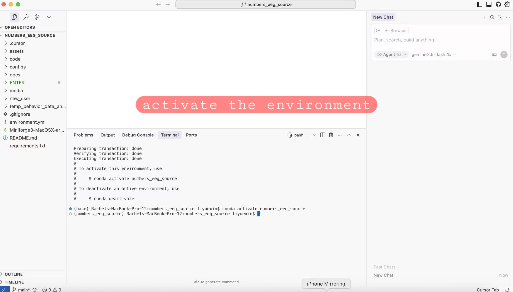
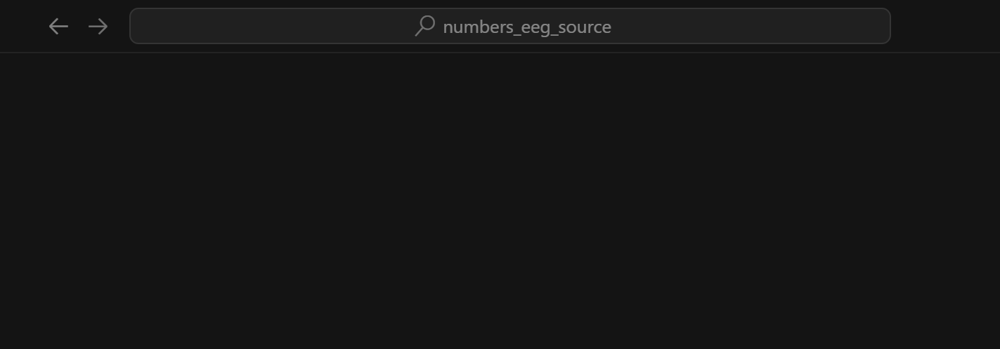

Complete these steps BEFORE our first meeting. This will take approximately 45-60 minutes.
Reference: This pipeline follows best practices from:
Jas, M., Larson, E., Engemann, D. A., Leppäkangas, J., Taulu, S., Hämäläinen, M., & Gramfort, A. (2018). A reproducible MEG/EEG group study with the MNE software: Recommendations, quality assessments, and good practices. https://pmc.ncbi.nlm.nih.gov/articles/PMC6088222/
This guide is organized into two phases:
What you'll need:
Important: We'll be doing almost everything inside Cursor IDE's built-in terminal. You can also use your operating system's terminal if you prefer.
Install these three tools before moving to Phase 2.
Cursor is an AI-powered code editor with a built-in terminal. We'll use Cursor for everything.
Official Website: https://cursor.com
Quick Introduction Video (4 minutes): Introduction to Cursor
Note: This video is about 10 months old, so Cursor looks a little different now, but it gives you a good idea of what you're downloading.
.exe file.dmg filechmod +x Cursor-*.AppImageDon't open Cursor yet! We'll open it to the project folder after we clone the repository.
Git is version control software that lets you download and manage code.
git --versiongit version 2.x.xgit --versionbrew install gitgit --versionOpen your terminal and run:
sudo apt-get update
sudo apt-get install git
git --version
Miniforge is a lightweight conda installer that will manage Python and all scientific packages.
Note: If you already have Conda or Anaconda installed, you can skip Miniforge.
conda --version
You should see conda 24.x.x or similar
In your OS Terminal (Applications → Utilities → Terminal), run:
Note: You can run this from any directory - it will install Miniforge to your home folder by default.
curl -L -O "https://github.com/conda-forge/miniforge/releases/latest/download/Miniforge3-MacOSX-$(uname -m).sh"
bash Miniforge3-MacOSX-$(uname -m).sh
Follow the installation prompts:

/Users/yourname/miniforge3)The installer will ask: "Do you wish to update your shell profile to automatically initialize conda?" - Type yes
conda --versionYou should see conda 24.x.x or similar. Your terminal prompt may now show (base) - this is normal and means conda is active.
In your terminal, run:
curl -L -O "https://github.com/conda-forge/miniforge/releases/latest/download/Miniforge3-Linux-x86_64.sh"
bash Miniforge3-Linux-x86_64.sh
# Follow prompts
# Close and reopen terminal
conda --version
Before moving to Phase 2, verify you have:
git --version works)conda --version works)If any of these failed, check the Troubleshooting section at the bottom before continuing.
Now we'll clone the project, add the data, and configure everything.
Now we'll download the analysis code from GitHub using your OS terminal (PowerShell/Terminal/Command Prompt).
Pick a location for the project. Recommended:
C:/Users/YourName/Projects/ or D:/Projects/~/Projects/ or ~/Documents/~/Projects/ or ~/workspace/Open your OS terminal (the same one you used to verify Git installation) and run:
Windows:
# Create Projects folder if it doesn't exist
mkdir C:/Users/YourName/Projects/ -ErrorAction SilentlyContinue
# Navigate there
cd C:/Users/YourName/Projects/
# Clone the repository
git clone https://github.com/yurigushiken/numbers_eeg_source.git
# Enter the project directory
cd numbers_eeg_source
macOS/Linux:
# Create Projects folder if it doesn't exist
mkdir -p ~/Projects/
# Navigate there
cd ~/Projects/
# Clone the repository
git clone https://github.com/yurigushiken/numbers_eeg_source.git
# Enter the project directory
cd numbers_eeg_source
Now that the repository is cloned, launch Cursor and open the project folder:
numbers_eeg_source folder you just clonedFrom now on, we'll use Cursor's built-in terminal for all commands!
To open Cursor's terminal: Press Ctrl + ` (Windows/Linux) or Cmd + ` (macOS)
Now that you have the project cloned, let's add the EEG data (approximately 1.7 GB).
Here's what we're aiming for - your data folder should end up in the project root:
numbers_eeg_source/ ← Your project root
│
├── code/ ← Python analysis scripts
├── configs/ ← YAML configuration files
├── new_user/ ← Training materials
├── assets/ ← EEG montage files
├── data/ ← Your data folder!
│ └── data_preprocessed/
│ └── hpf_1.5_lpf_35_baseline-on/
│ ├── sub-02_preprocessed-epo.fif
│ ├── sub-02/
│ ├── sub-03_preprocessed-epo.fif
│ └── ... (more subjects)
├── environment.yml
└── README.md
🔗 Google Drive: https://drive.google.com/drive/folders/1N_UNP1LtLRItqV5NyaFNz6h1iuHqiH5F?usp=drive_link
datadata folder:
data folder.zip file (this may take 5-10 minutes)datadata folder you extracteddata folder:
numbers_eeg_source project folderdata folder into the root of the project:
That's it! Your data folder should now be in the project root, matching the structure shown above.
Now we'll create a dedicated Python environment with all required packages using Cursor's terminal.
The project includes an environment.yml file that specifies all the packages you need. This ensures everyone has the exact same setup!
In Cursor's terminal, make sure you're in the project directory, then run:
# Make sure you're in the project root
pwd # Check your location first
# Create environment from file
conda env create -f environment.yml
# This will take 5-10 minutes to download and install all packages
macOS users: You'll see this in your terminal:
This single command will:
numbers_eeg_sourceOnce the environment is created, activate it in Cursor's terminal:
conda activate numbers_eeg_source
macOS users: After activating, you'll see the environment name in your prompt:
How to tell if it's activated:
(numbers_eeg_source) at the beginning(numbers_eeg_source) C:\Users\YourName>With the environment activated in Cursor's terminal, run these tests:
# Test MNE
python -c "import mne; print(f'MNE version: {mne.__version__}')"
# Test PyVista (3D visualization)
python -c "import pyvista; print('PyVista OK')"
# Test all imports
python -c "import mne, numpy, scipy, pandas, matplotlib; print('All packages OK!')"
You should see output like:
MNE version: 1.x.x
PyVista OK
All packages OK!
Now that Cursor is open with your project, let's see what's inside.
You should see these folders in Cursor's sidebar:
code/ - Python analysis scriptsconfigs/ - YAML configuration filesnew_user/ ← Start here!data/ ← Your EEG dataassets/ - Montage filesenvironment.yml - Environment specrequirements.txt - Package listTHIS IS CRITICAL! Cursor needs to know which Python interpreter to use.
Why do this? This tells Cursor to always use the numbers_eeg_source environment when running Python code. Without this, Cursor might use a different Python installation that doesn't have the required packages (MNE, NumPy, etc.), and your code won't work.
Ctrl + Shift + PCmd + Shift + PPython: Select Interpreternumbers_eeg_source:
Python 3.11.x ('numbers_eeg_source': conda)C:\Users\YourName\miniforge3\envs\numbers_eeg_source\python.exe/Users/YourName/miniforge3\envs/numbers_eeg_source/bin/python/home/YourName/miniforge3/envs/numbers_eeg_source/bin/pythonYou should now see the environment displayed at the top of Cursor, confirming it's selected:
This ensures Cursor always uses the correct Python environment with all your installed packages.
Let's make sure everything works by running the example analysis in Cursor's terminal.
Inside new_user/configs/ you'll find:
In Cursor's terminal, run:
Windows:
# Make sure environment is activated
conda activate numbers_eeg_source
# Run the script with the example config
.\new_user\run_analysis.bat new_user/configs/13_31/sensor_13_31.yaml
macOS/Linux:
# Make sure environment is activated
conda activate numbers_eeg_source
# Run the analysis
python -m code.run_full_analysis_pipeline --config new_user/configs/13_31/sensor_13_31.yaml --accuracy all
Note: You must specify the sensor-space config file. If the sensor analysis finds significant results, it will automatically run the source-space analyses. This is the proper workflow for running the pipeline!
The pipeline will:
new_user/derivatives/[SCREENSHOT: Pipeline completing successfully with final output messages]
If successful, you're ready for the meeting! 🎉
We've created an automated checker script that verifies everything is set up correctly.
In Cursor's terminal, run:
python new_user/check_setup.py
The script will check:
If everything is set up correctly, you'll see:
SUCCESS! Your setup is complete!
You are ready for the first training meeting.
If there are any issues, the script will show you exactly what needs to be fixed.
Before the meeting, verify ALL of these:
git --version works)conda --version works)data/ folder is in project root)numbers_eeg_source/ folder exists)conda activate numbers_eeg_source works)python -c "import mne" works without errors)Python 3.11.x ('numbers_eeg_source'))"Git clone failed with authentication error"
"Can't find the data_preprocessed folder on Google Drive"
"Data folder is huge (several GB)!"
hpf_1.5_lpf_35_baseline-on/"Cursor won't open on macOS - 'App is damaged'"
"Cursor doesn't show my conda environment in interpreter list"
conda initCtrl+Shift+P → "Python: Select Interpreter" → "Enter interpreter path""conda: command not found" after installing Miniforge
conda init bash (or conda init zsh for macOS)"Package installation failed with conflicts"
conda remove -n numbers_eeg_source --all
conda env create -f environment.yml
"Python says 'No module named mne' even after installation"
conda activate numbers_eeg_sourceCtrl+Shift+P → "Python: Select Interpreter")which pythonwhere python"PyVista/VTK installation fails"
conda install -c conda-forge pyvista -ypip install pyvista"Permission denied when running shell scripts"
chmod +x new_user/run_analysis.sh"Error: No config file specified!"
.\new_user\run_analysis.bat new_user/configs/13_31/sensor_13_31.yaml"conda: command not found" (macOS)
~/miniforge3/bin/conda init zsh
conda --version"conda activate does nothing" (Windows)
(numbers_eeg_source) appears)cd path\to\numbers_eeg_sourceconda env create -f environment.ymlconda activate numbers_eeg_source"TypeError: data type '>a' not understood" (macOS Apple Silicon)
conda activate numbers_eeg_source
conda install -c conda-forge "mne>=1.7" "numpy>=2.0" -y
environment.yml file already includes these requirements for new installationsOnce you've completed this setup:
new_user/examples/sensor_13_31.yaml| Tool | Download Link | Purpose |
|---|---|---|
| Git | https://git-scm.com | Clone the repository |
| Cursor IDE | https://cursor.com/download | Edit code and config files |
| Miniforge | https://github.com/conda-forge/miniforge | Python package manager |
| EEG Data | Google Drive | Preprocessed epoch files |
Project Repository: https://github.com/yurigushiken/numbers_eeg_source
Data Location: data/data_preprocessed/hpf_1.5_lpf_35_baseline-on/
Environment Files:
environment.yml - Create with: conda env create -f environment.ymlrequirements.txt - Or use pip: pip install -r requirements.txtKey Commands to Remember:
# ALWAYS activate before running analyses!
conda activate numbers_eeg_source
# Select Python interpreter in Cursor:
# Ctrl+Shift+P (Win/Linux) or Cmd+Shift+P (Mac)
# Type: "Python: Select Interpreter"
If you have questions or run into issues, please email: mkg2145@tc.columbia.edu
We will try to get it set up and running before the first meeting.